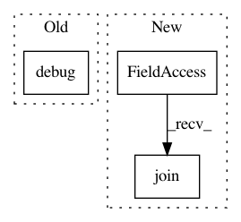

a1af2977c50399f58726182cd9481a6770c115ac,sos/sos_task.py,,check_task,#Any#,224
Before Change
else:
return "completed-old"
else:
env.logger.debug("{} not found or signature mismatch".format(res["output"]))
if new_res:
return "failed-missing-output"
else:
return "failed-old-missing-output"
After Change
raise ValueError("Task does not exist: {}".format(task))
status_file = os.path.join(os.path.expanduser("~"), ".sos", "tasks", task + ".status")
res_file = os.path.join(os.path.expanduser("~"), ".sos", "tasks", task + ".res")
job_file = os.path.join(os.path.expanduser("~"), ".sos", "tasks", task + ".sh")
if os.path.isfile(res_file):
try:
from .target import FileTarget
In pattern: SUPERPATTERN
Frequency: 3
Non-data size: 3
Instances
Project Name: vatlab/SoS
Commit Name: a1af2977c50399f58726182cd9481a6770c115ac
Time: 2017-03-30
Author: ben.bog@gmail.com
File Name: sos/sos_task.py
Class Name:
Method Name: check_task
Project Name: tryolabs/luminoth
Commit Name: 12bba41d0a8f8eb2f236f7efdd4f656338c1281b
Time: 2018-09-04
Author: agustin@tryolabs.com
File Name: luminoth/tools/dataset/readers/object_detection/csv_reader.py
Class Name: CSVReader
Method Name: iterate
Project Name: Microsoft/nni
Commit Name: 63697ec5f69a9e8f422841c03ca5f44c5c5ebc3a
Time: 2019-03-22
Author: 38930155+chicm-ms@users.noreply.github.com
File Name: src/sdk/pynni/nni/msg_dispatcher_base.py
Class Name: MsgDispatcherBase
Method Name: run